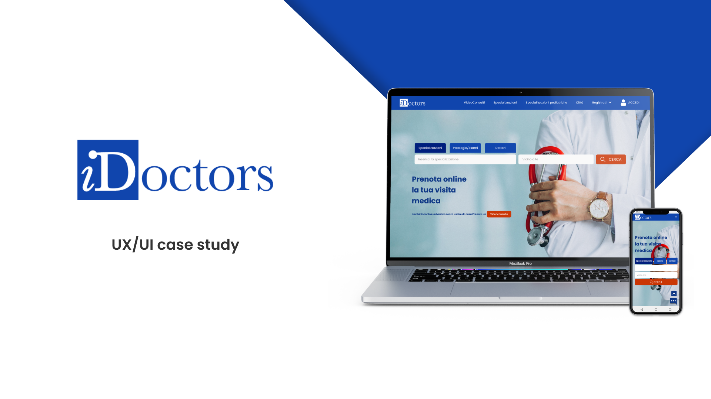
Idoctors, creato nel 2008, è il primo servizio online in Italia per agevolare medici e pazienti, nella prenotazione e gestione delle visite specialistiche in modo facile, rapido e trasparente.
Scoprire i punti deboli dell’attuale sito e proporre soluzioni per migliorare l'esperienza dell'utente in fase di ricerca e prenotazione di una visita medica.
Il lavoro che ho svolto è stato quello di effettuare una riprogettazione sia per la versione desktop che per la versione mobile.
Per prima cosa ho effettuato una ricerca dei COMPETITORS DIRETTI.
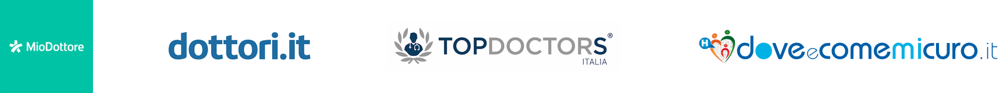
Ho effettuato un sondaggio per verificare l’effettiva funzionalità, ed evidenziare i punti di forza ed i punti deboli della versione originale del sito, in modo da sapere dove intervenire per apportare le giuste modifiche e migliorare così il sito.
Da questa ricerca, ho quindi creato delle PERSONAS che rappresentano dei gruppi utenti con fascia d’età, necessità, aspettative e obiettivi molto diversi tra di loro. Il TARGET infatti copre una fascia d’età che va dai 18 anni agli over 50, distinguendosi tra medici e pazienti.
Ho proseguito con la creazione dei relativi USER JOURNEY, ovvero un racconto step by step in cui vengono mappate le azioni, le emozioni dell’utente e le criticità della sua esperienza durante le fasi di interazione e quindi le opportunità di miglioramento.
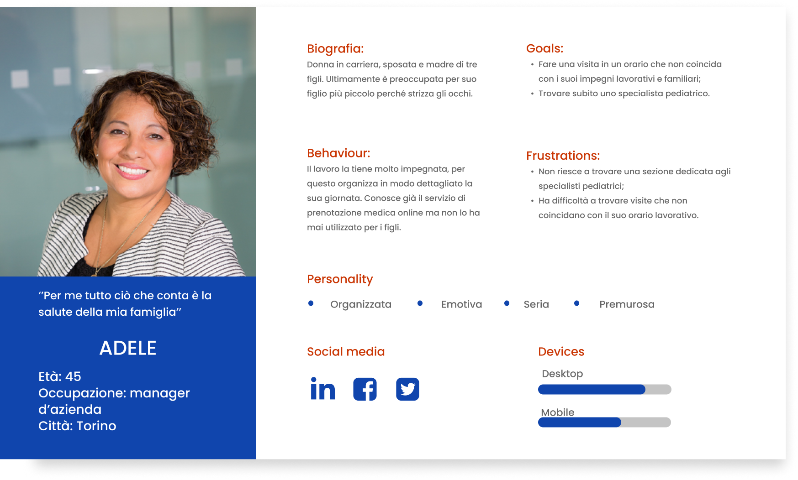
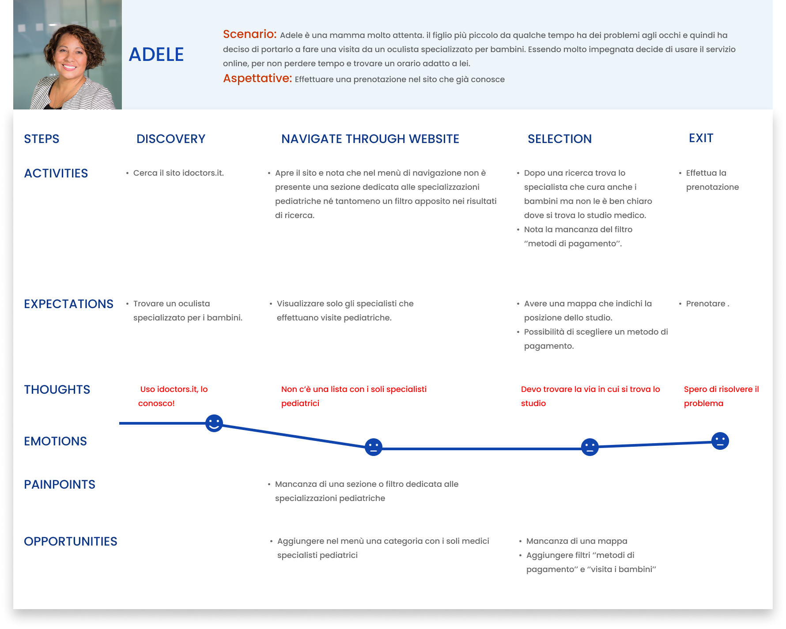
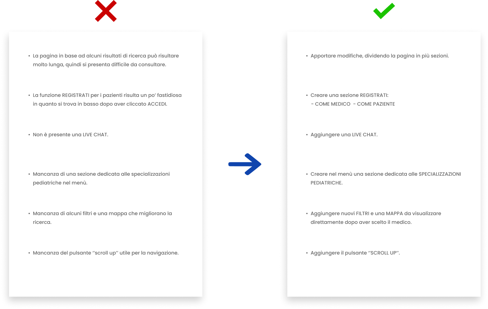
La ricerca effettuata mi ha portato ad una review dell’Architettura dell’Informazione, aggiungendo nuove funzionalità.
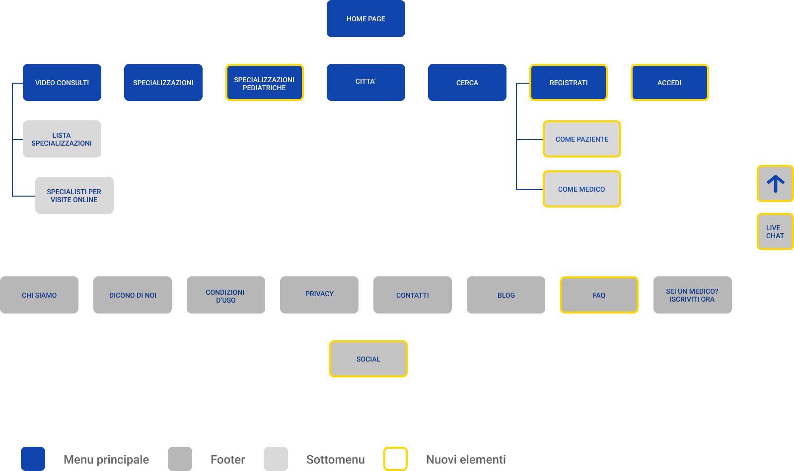
Finita la fase di discovery mi sono concentrata sulla creazione dei wireframe che mi hanno aiutato a capire come riorganizzare la struttura generale e i gli schemi di navigazione del sito.
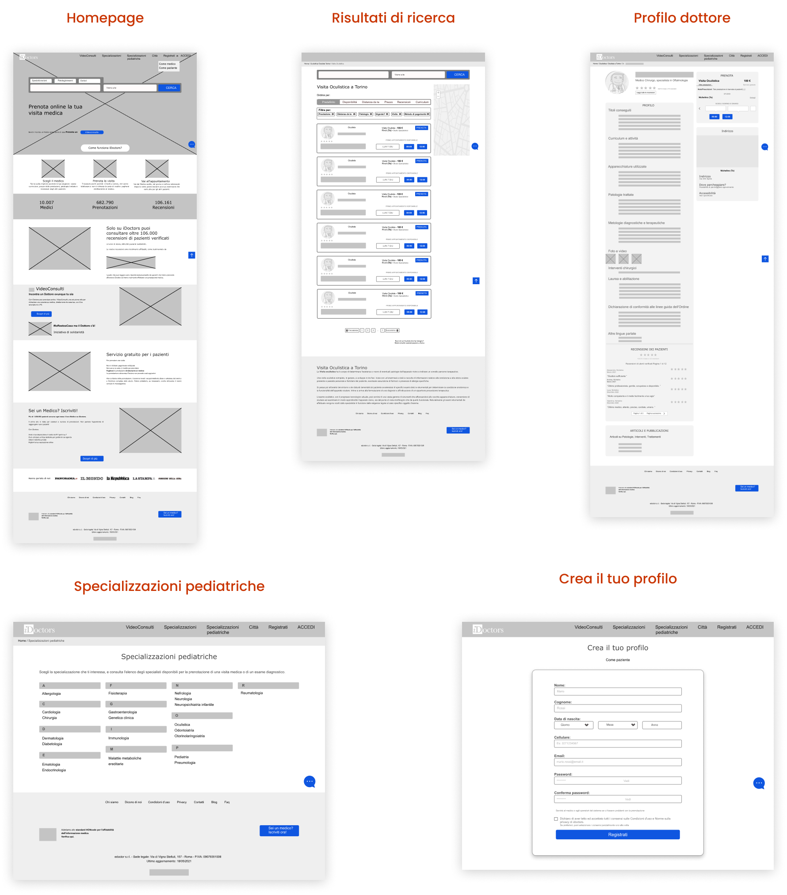
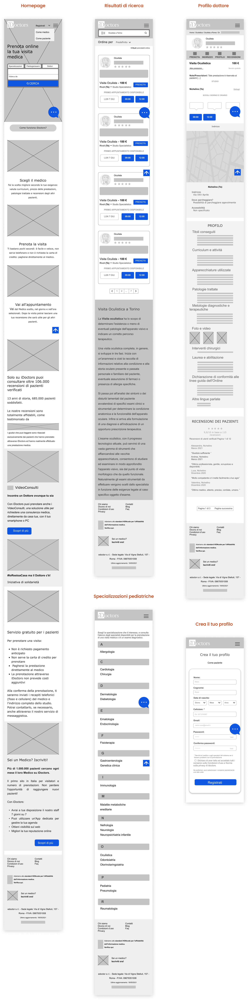
Una volta terminata la fase in cui ho riorganizzato in generale il sito, ho costruito un DESIGN SYSTEM per assicurarmi che tutti gli elementi di progettazione fossero coerenti durante tutto il processo.
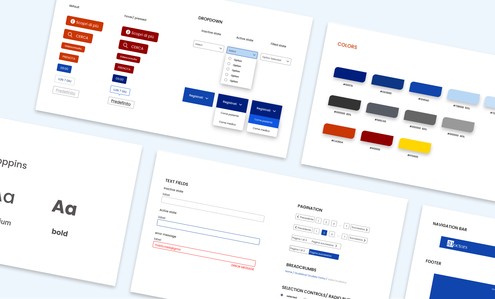
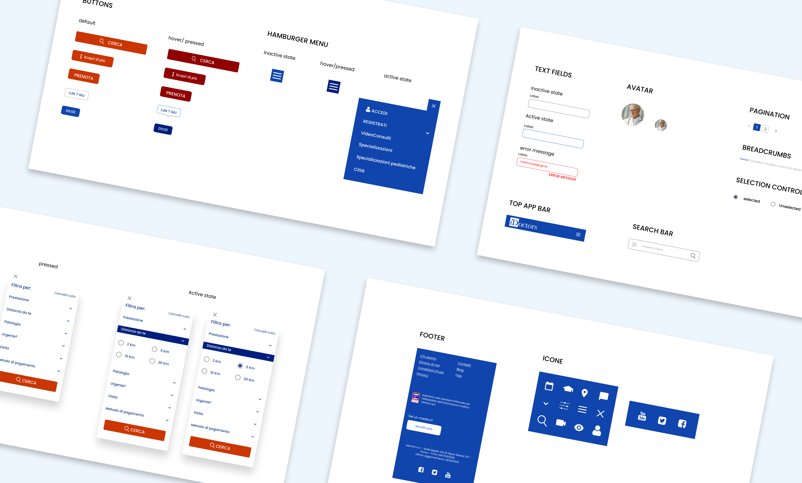
Ho creato un prototipo cliccabile per testare le mie idee e convalidare la riprogettazione del sito.
Link ai prototipi desktop e mobile.
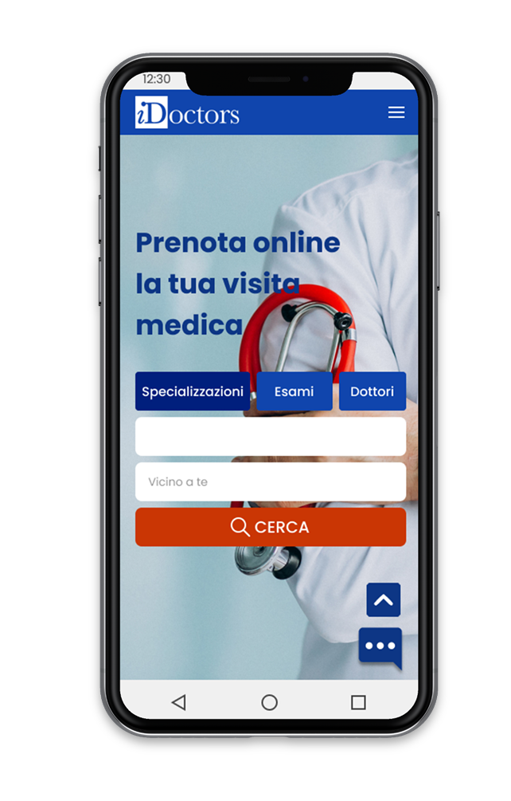
Infine sono giunta alla fase in cui testare il prototipo.
Ho creato due sessioni di test, un FIVE SECOND TEST e un USABILITY TEST MODERATO DI PERSONA. Ho avuto l’opportunità di incontrare e sottoporre il prototipo interattivo a 5 tester, distinti tra pazienti e medici (il target di riferimento). Le due sessioni di test mi hanno permesso di ricevere molti feedback e approfondimenti preziosi.
Analizzando gli insight dei due test effettuati, ho risolto alcuni problemi emersi, migliorando di conseguenza il sito.